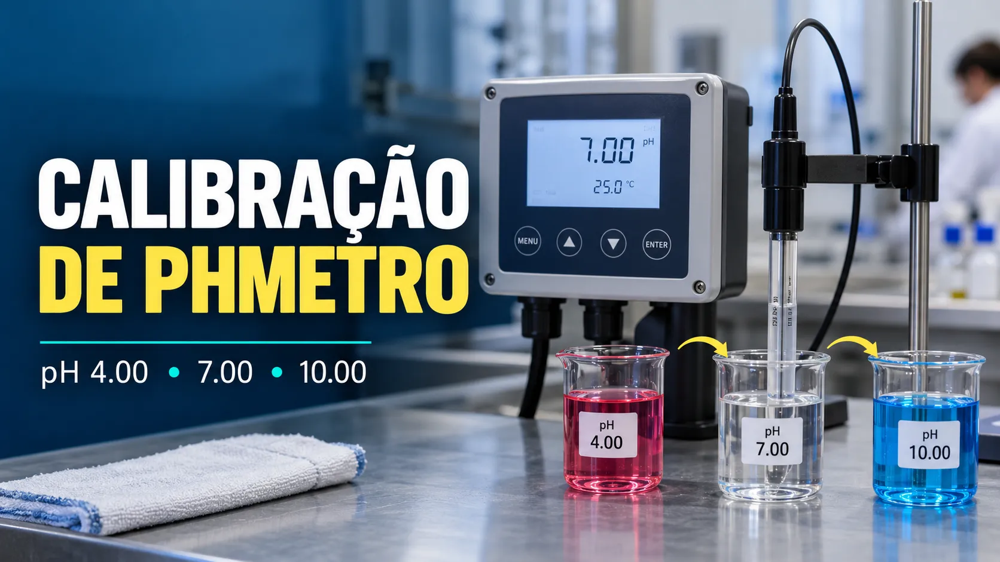

Calibração de pHmetro: slope, offset e buffers
Conteúdo técnico: ALOGY Engenharia · Atualizado em: 11/09/2026

Uma calibração útil de pH começa antes do ajuste: é preciso saber se o desvio pertence ao sensor, à referência, ao transmissor, à temperatura, aos buffers ou à própria amostra. Sem essa separação, o ajuste pode apenas esconder revestimento, contaminação ou instalação inadequada.
As-found, limpeza, calibração e ajuste
Depósitos sobre o vidro sensível ou a junção de referência podem produzir resposta lenta, instabilidade e desvio. A sequência mais informativa é registrar a leitura as-found, limpar conforme o manual, repetir a verificação e somente então decidir se o ajuste é necessário. Ajustar um sensor sujo pode mascarar a causa do erro.
Como escolher e usar os buffers
- Use soluções rastreáveis, dentro da validade e sem contaminação; não devolva solução usada ao frasco.
- Escolha dois pontos que envolvam a faixa normal do processo sempre que o procedimento e o transmissor permitirem.
- Um terceiro buffer independente pode ser usado para verificar a calibração.
- Enxágue sem esfregar o bulbo, remova apenas o excesso de líquido e aguarde estabilidade em cada ponto.
- Informe ou meça corretamente a temperatura: o valor certificado do buffer e a sensibilidade do eletrodo variam com ela.
Buffers alcalinos exigem atenção ao tempo de exposição ao ar, pois podem absorver dióxido de carbono. Use recipientes limpos e porções pequenas e não calibre diretamente no frasco de armazenamento.
Um ponto, dois pontos e verificação
A calibração de um ponto, normalmente próxima de pH 7, corrige principalmente o zero ou potencial de assimetria. A calibração de dois pontos determina zero e slope; os buffers precisam ter valores diferentes e cobrir a região de interesse.
Depois do ajuste, faça uma verificação sem recalibrar. Retornar ao primeiro buffer testa repetibilidade; usar um terceiro buffer dentro da faixa avalia a resposta em um ponto que não participou do ajuste.
Slope, offset e equação de Nernst
Em um eletrodo ideal, a sensibilidade de Nernst é aproximadamente 59,16 mV por unidade de pH a 25 °C. O transmissor pode exibir o sinal com convenção positiva ou negativa; para avaliar a magnitude do slope, compare o módulo da variação em mV com a variação de pH.
O valor teórico depende da temperatura; por isso a comparação precisa ser feita na condição correta.
O offset representa o deslocamento próximo ao ponto neutro. Slope reduzido pode indicar envelhecimento, revestimento ou problema de referência; offset elevado pode estar associado a contaminação, junção obstruída, buffer inadequado ou entrada elétrica. Nenhum diagnóstico deve ser fechado por um único número.
Temperatura do eletrodo, do buffer e do processo
A compensação automática pode ajustar a resposta teórica de Nernst e também selecionar o valor do buffer na temperatura medida, conforme o transmissor. Sensor de pH, elemento de temperatura e buffer precisam estar em equilíbrio antes de armazenar o ponto.
Essa compensação não corrige universalmente a química do processo. Uma amostra retirada quente pode mudar de pH ao esfriar por equilíbrio químico, absorção de gases ou perda de voláteis.
Exemplo numérico
Entre buffers pH 7 e pH 4, uma variação medida de 174,81 mV resulta em 58,27 mV/pH. Comparada ao valor teórico de 59,16 mV/pH a 25 °C, a resposta é aproximadamente 98,5%. A aceitação deve seguir o manual do conjunto sensor/transmissor e o procedimento da instalação.
Registro mínimo recomendado
- identificação do sensor, transmissor e ponto de medição;
- lote, validade, valores e temperatura dos buffers;
- leituras antes da limpeza, depois da limpeza e após eventual ajuste;
- slope, offset, tempo de estabilização e mensagens de diagnóstico;
- condição da junção, cabos, conectores, aterramento e sistema de amostragem;
- resultado final as-left e intervenção executada.
Sequência prática de campo
- Coloque a malha em condição segura e registre pH, temperatura, mV e diagnósticos as-found.
- Inspecione montagem, cabo, conector, umidade e condição da junção.
- Enxágue e meça os buffers sem ajustar.
- Limpe conforme o contaminante e o manual e repita a verificação.
- Ajuste somente se o procedimento exigir e o conjunto estiver estável.
- Verifique novamente, documente slope, zero, erros e as-left e restaure a malha.
Ferramentas e referências
- Thermo Fisher Scientific — pH Measurement Handbook
- Endress+Hauser — limpeza, verificação e calibração de pH
- Yokogawa — Performing a Calibration on the PH202
Aviso de uso
Este conteúdo é informativo e não define sozinho critérios de aceitação. Use procedimento aprovado, manual do fabricante, soluções de referência adequadas, rastreabilidade metrológica e avaliação da instalação.